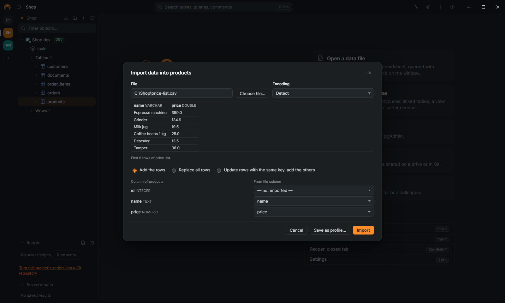

Import and export
The actions below are in the right-click menu of the navigator, and in the command palette (Ctrl+K). The full list of formats and options is in FEATURES.md.
Import a file into a table

- Right-click the table in the navigator, then Data › Import data….
- Choose the file: CSV, TSV, JSON, NDJSON, Parquet or Excel.
- Check the preview and the mapping of the columns.
- Choose Add the rows, Replace all rows or Update rows with the same key, add the others, then click Import. The last one needs a primary key on the table, and is not offered on ClickHouse.
Import data… is offered on tables, not on views. For a new table, right-click the schema and choose Import data into a new table…: the types are those DuckDB infers from the file, and there is no choice of mode. Paste CSV as a new table… (same menu) imports the clipboard.
Import is not offered on a read-only connection, on one that forbids data editing, or on NoSQL databases.
Export tables to a file
- Right-click one table, or select several, then Data › Export data…. For every table of a schema, right-click the schema and choose Export all tables….
- Choose the Format (CSV, JSON, NDJSON, Parquet, Excel, SQL
INSERT, Markdown, HTML or XML) and click Export to folder…: even for one table the app asks for a folder, and writes one file per table, named after it. - Optionally set Compression (gzip or zstd; not for Parquet and Excel, which are packed already) and Also upload to… a bucket (S3, GCS, R2 or MinIO).
When you export a query's result instead (the export of the results grid), the dialog asks for one file, and upload can also go to a signed URL (S3 or GCS).
CSV cells that a spreadsheet would run as a formula get a leading ' unless you turn off Formulas as text, for spreadsheets. A connection can forbid exports (Appearance and safety page); the action is then not offered. See Safety.
To take a query's result out, copy it from the grid as CSV, JSON, Markdown, HTML, SQL INSERT or an IN list.
Copy a table or a schema to another database
Right-click one table and choose Data › Copy to a database… (it lets you map the columns), select several tables of a schema and choose Data › Copy tables to a database…, or right-click the schema and choose Copy schema to a database…. The types are mapped. The target is a SQL connection that is not read-only and allows data editing. Copying several tables or a schema is for SQL sources; one MongoDB collection or Redis key type can be copied to a SQL database. None of these is offered when the connection forbids exports.
Run a SQL file, or dump to one
Right-click a connection or a database and choose Run SQL file…: it runs a .sql file (or .sql.gz, .sql.zst) of any size statement by statement, with progress and Stop, by default in one transaction that a failure rolls back. Dump to SQL file… (on a schema, or on tables under Data) writes the DDL of a schema or of chosen objects, and if wanted their rows, to one file.
Save a transfer for later
Every export, import and copy dialog has Save as profile…. Transfer profiles… (command palette) runs, renames, deletes and schedules them. A bucket's secret key is never saved in the profile file.
Query a data file without importing it
Drop a CSV, JSON, Parquet or Excel file on the window, or click Open a data file on the welcome screen: it opens as a database (each Excel sheet is a table). The first time, the app offers to download DuckDB's library.
Import connections
On the welcome screen, Import connections reads DBeaver, DataGrip and pgAdmin (and pg_service.conf); Db2 connections from DBeaver and DataGrip, and jdbc:db2: URLs, are read too. Export connections writes a .platypusconn file for another computer: see Projects and sharing.